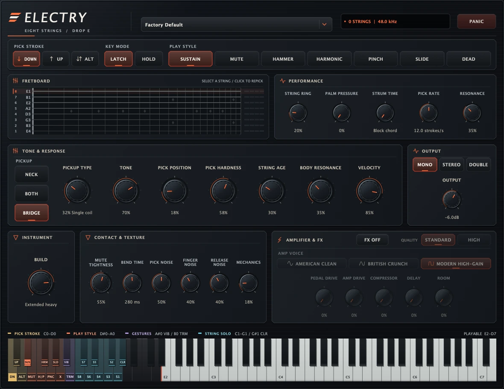

Physically modelled eight-string guitar
Electry
An eight-string Drop-E electric guitar with a waveguide voice per string and a fretting hand that decides where in the neck a phrase actually lands. No samples of a guitar, anywhere in it.
Free, or name your price.

Features
What it does.
- Eight modelled strings, Drop-E, 22 frets, E1 to D6
- A fretting hand that keeps a phrase where you played it
- Keyswitched pick stroke: down, up or alternate
- Keyswitched styles: sustain, mute, legato, harmonics, slide, dead note
- Held keys for vibrato and for tremolo picking up to 20 strokes a second
- One shared bridge, so idle strings ring and fingered ones trade energy
- A modulation wheel that opens the feedback path into self-sustain
- Distortion pedal, three amp and cabinet voices, compression
- Lead delay and a stereo room, every amount dry-bypassed at zero
- Up to 8x oversampling around the nonlinear stages
macOS, Linux or Windows · VST3, Audio Unit, Standalone
Support
Something wrong?
Send the version, your host and your operating system, and what you did to see it.
protocodus@proton.me